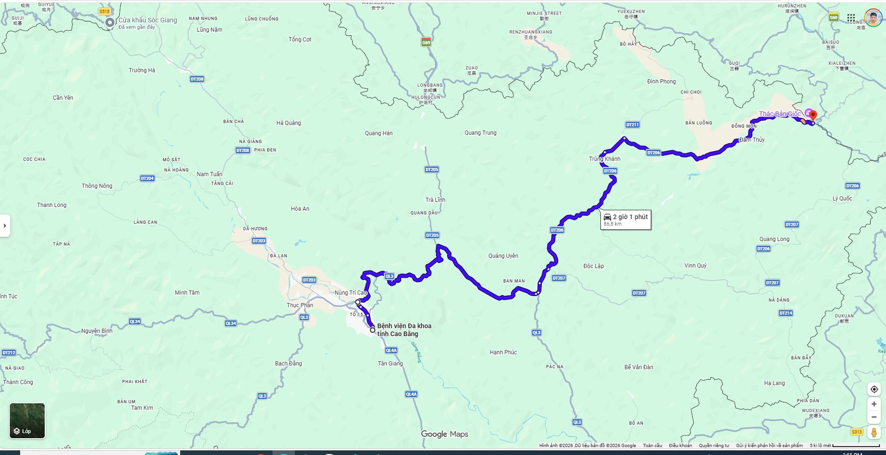

One bus. No transfers. It stops right in front of Sen's Homestay — just step outside and wave.
One public bus connects Cao Bang City to Ban Gioc Waterfall, and it passes right in front of Sen's Homestay. No bus station. No transfers. Flag it down from the pavement, pay the conductor on board.

Buses roughly every 30–40 min. The driver does not stop automatically — you must wave.
Step outside Sen's and stand on the pavement directly in front of the gate. The bus runs along this road on the same side — no need to cross.
When you see a bus approaching (same direction as in the video), raise your hand to flag it down. It won't stop on its own — the driver needs to see you wave.
Once on board, tell the conductor your destination and pay on the spot — around 80,000₫. Have small notes ready. The bus drops you right at the entrance, so you don't need to watch the stops.
Tôi muốn đi Thác Bản Giốc, xin cho tôi xuống ngay cổng vào khu du lịch thác. Cảm ơn!
The bus drops you right at the Ban Gioc entrance gate. Buy your admission ticket at the kiosk and enjoy the waterfall — two hours is enough for a relaxed visit.
Just as simple. From the waterfall entrance, flag down a bus going the opposite direction. Tell the conductor "Cao Bằng" and ask to get off at Sen's Homestay (or show the card below). The same Route 03 bus passes our gate on the way back.
Tôi muốn xuống ở Sen's Homestay gần Siêu thị Ngọc Xuân, Cao Bằng. Cảm ơn bác tài!
We'll confirm today's bus times, weather at the falls, and walk you to the gate if you'd like a hand.